<mat-toolbar color="primary">
  <mat-toolbar-row>
    <div class="navbar-brand">
      <a routerLink="">
        
      </a>
    </div>
    <div id="navbarMain" class="navbar-collapse collapse">
      <span class="nav-item">
          <a routerLink="about" routerLinkActive="active" class="nav-link">About</a>
      </span>
    </div>
    <span class="nav-spacer"></span>
    <button mat-icon-button class="example-icon" aria-label="icon-button with menu icon">
      <mat-icon>menu</mat-icon>
    </button>
  </mat-toolbar-row>
</mat-toolbar>


  <div class="container content">
    <br/>
    <br/>
    <br/> 
    <router-outlet></router-outlet>
    <footer>
      <div class="row">
        <mat-grid-list cols="12">
          <small>&copy; Getting Mean - Simon Holmes | Clive Harber 2018</small>
        </mat-grid-list>
      </div>
    </footer>
  </div>
